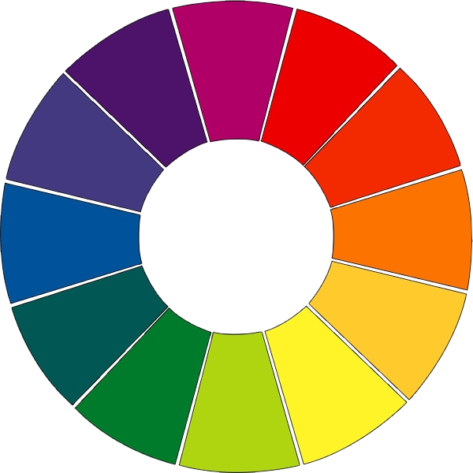

Cores

Círculo Cromático
Grupos de cores
Cores primárias
- Vermelho
- Azul
- Amarelo
Cores secundárias
- Verde
- Laranja
- Roxo
Cores terciárias
São resultado da soma entre uma cor primária e uma secundária
Relação entre cores
Cores Complementares
A cor complementar de uma primária é a soma das duas outras primárias em proporções iguais, ou seja, uma cor secundária. São as combinações que tem mais contraste: vermelho e verde, azul e laranja e amarelo e violeta. Para encontrá-las, no círculo cromático, é só verificar aquela a cor que está na posição diretamente oposta a cor escolhida.
Cores Análogas
É uma combinação com três cores consecutivas ( vizinhas) no círculo de cores. Normalmente é composta por uma cor primária e suas adjacentes. Como as cores tem a mesma base, essa é uma composição de pouco contraste.
Cores em CSS
Hexadecimal
Utiliza como base o sistema de numeração hexadecimal, que é composto pelabase do sistema numérico tradicional (0123456789) acrescido de ABCDEF. Ou seja, o alfabeto hexadecimal é 0123456789ABCDEF.
No CSS, a utilização mais comum do sistema hexadecimal é para representar o código de cores RGB (Red, green, blue) través do uso de três pares de caracteres, onde cada par representa uma das cores do RGB: #RRGGBB, assumindo valores entre 00 (ausência de cor) e FF (máximo de cor).
Entretanto, é importante salientar que os níveis de presença de cada cor devem ser interprados segundo a perspectiva do estulo de espectros de luz, pois é assim que nossos dispozitivos produzem as cores que nós visualizamos.
Ou seja, o valor máximo de cor "#FFFFFF" representa a cor branca, e o valor mínimo de cor "#000000" representa o preto.
Hexadecimal com transparência
RGB
Esse sistema de cores compreende 16.8 milhões de cores distintas, que são formadas através da junção dos canais de cores vermelho, verde e azul.
Além de ser comumente representado através do sistema hexadecimal, o RGB é amplamente utilizado na sua forma mais comum, "R, G, B", onde cada um dos caracteres representa um canal de cor cujo valor varia entre 0 e 255 para combinar diferentes tons de vermelho, verde e azul para formar a cor desejada.
Como resultado, tem-sem um total de 16.777.216 cores distintas.
RGBA
HSL
HSLA
Cor predefinida pelos browsers
Cor atual do elemento
Referências
https://uxdesign.cc/turning-color-theory-into-css-a-quick-dive-7c6e485ac701
https://www.youtube.com/watch?v=Iu8Q2u17hVs
https://www.maujor.com/tutorial/css3-modulo-para-cores.php
https://www.chiefofdesign.com.br/teoria-das-cores/